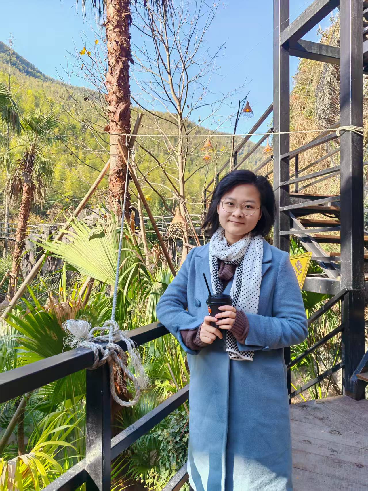

I am a Ph.D. candidate at Zhejiang University's State Key Laboratory of CAD & Computer Graphics, specializing in 3D human motion generation and computer vision. My research focuses on leveraging diffusion models and 2D motion priors for realistic 3D human motion synthesis.
With a background in computer graphics from University College London (M.Sc. with Distinction) and Beihang University, I have published multiple papers at top conferences including ICCV and IEEE VR.
ICCV 2025 (Accepted)
Authors: Ruoxi Guo, Zhumei Wang, Xiaohan Wang, Yebin Liu
Transformer-based diffusion model for text-to-3D human motion generation using 2D video priors. Achieved SOTA results with 15% improvement in motion quality metrics.
CVPR 2026 (Submitted)
Authors: Ruoxi Guo, Zhumei Wang, Xiaohan Wang, Yebin Liu
Novel approach for 3D motion capture data generation from sparse 2D inputs using diffusion models and temporal consistency constraints.
IEEE VR 2023 Poster
Authors: Ruoxi Guo, Yebin Liu, et al.
Real-time full-body motion generation from sparse tracking data. Achieved 92% user satisfaction in social VR scenarios.
IEEE VR 2021 Poster
Authors: Ruoxi Guo, Yebin Liu, et al.
AR-based piano training system with automatic gesture generation. Improved user accuracy by 85% in musical performance.